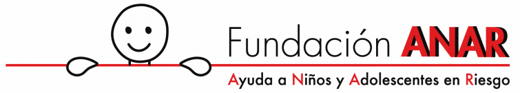

ANAR - WEBSITE X5 UNREGISTERED VERSION 13.0.1.16 - Bullying

Menu Principal:

ANAR

La Fundación ANAR (ayuda a niños y adolescentes en riesgo) es una organización sin ánimo de lucro, cuyos orígenes se remontan a 1970, y se dedica a la promoción y defensa de los derechos de los niños y adolescentes en situación de riesgo y desamparo, mediante el desarrollo de proyectos tanto en España como en Latinoamérica, en el marco de la Convención de los Derechos del Niño de Naciones Unidas.
Desde sus comienzos, la Fundación trabaja con los Hogares ANAR, casas de acogida para niños y adolescentes carentes de un ambiente familiar adecuado.
En 1994 pone en marcha el Teléfono ANAR de Ayuda a Niños y Adolescentes en Riesgo, línea gratuita y confidencial que opera en todo el territorio nacional las 24 horas del día y durante todo el año. Este teléfono ofrece de forma inmediata ayuda psicológica, social y jurídica a menores de edad con problemas o en situación de riesgo.
También desde 1994 está operativo el Teléfono ANAR del Adulto y la Familia, servicio de atención dirigido a adultos que necesitan orientación en temas relacionados con menores de edad.
Desde 2010 funciona el Teléfono ANAR para casos de Niños Desaparecidos, número único armonizado de la Unión Europea, que ofrece apoyo emocional a las familias durante las 24 horas, asesoramiento jurídico y social, ayuda a las denuncias y conexión inmediata con los Cuerpos y Fuerzas de Seguridad del Estado, así como con la red de todos los 116000 de Europa.
El Email ANAR, operativo desde 2007, es otro canal de comunicación para prestar asistencia a menores de edad, así como a adultos y profesores al que se accede a través de www.anar.org.
En 2017, adaptándonos a las nuevas formas de comunicación de los más jóvenes, pusimos en marcha el Chat ANAR, nuevo programa de ayuda a la infancia y adolescencia a través de las nuevas tecnologías.
La Fundación, a través de su Centro de Estudios e Investigación, realiza importantes y reconocidos Informes y Estudios sobre la situación de niños y adolescentes en España.
ANAR también está presente en colegios e institutos, en los que realiza acciones formativas con alumnos, profesores y padres. El proyecto “Buentrato” ha sido reconocido por UNICEF como ejemplo de Buenas Prácticas en la participación infantil a favor de la prevención de la violencia contra la infancia.
Con la misma filosofía que en España, la Fundación ANAR ha consolidado su presencia en Latinoamérica, impulsando la apertura de Hogares de Acogida en Colombia y el Teléfono ANAR en Perú.
NUESTRA VISIÓN
A qué aspiramos
Nuestra visión es la de un mundo en el que todos los niños, niñas y adolescentes tengan derecho a que su voz sea escuchada, sobre las situaciones de vida que les afectan y siempre que se vulneren sus derechos.
Conscientes de que son los más indefensos de nuestra sociedad, nuestra visión es la de un mundo en el que esos niños, niñas y adolescentes tengan plenamente protegidos sus derechos.
NUESTRA MISIÓN
Cuál es nuestro propósito:
Escuchar
Nuestra misión es escuchar a los niños y adolescentes que nos llaman a través de las líneas telefónicas y el chat ANAR, así como otros medios tecnológicos y sistemas de comunicación que en el futuro se vayan desarrollando e implementando en la sociedad.
Ayudar
Nuestra misión es llegar allí donde están los niños y adolescentes para ayudarles en sus problemas o inquietudes, protegerles, y empoderarles de una forma integral en todas sus necesidades, haciéndoles partícipes de la solución a sus propios problemas.
Acoger
Nuestra misión es acoger en nuestros hogares a los niños y adolescentes en situación de desamparo, facilitándoles un lugar seguro y cálido, que se convierta en una referencia sana en sus vidas.
Motivar
Nuestra misión es vincularnos con el sistema educativo promoviendo que los niños y adolescentes alcancen mayores niveles de reflexión y entendimiento de su realidad.
Prevenir
Nuestra misión es revertir a la sociedad, a través de nuestro Centro de Estudios, lo que los menores de edad nos dicen para que se adopten las medidas preventivas, educativas y legislativas necesarias para mejorar su realidad.